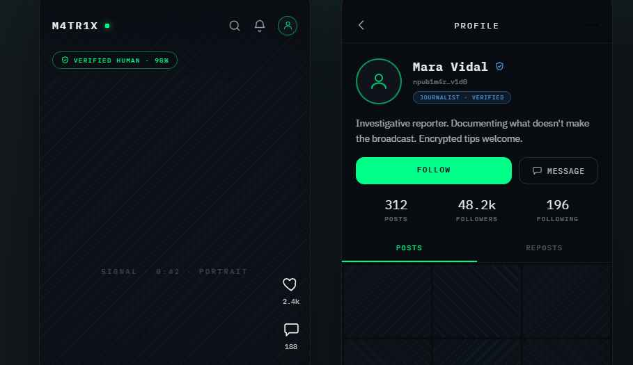
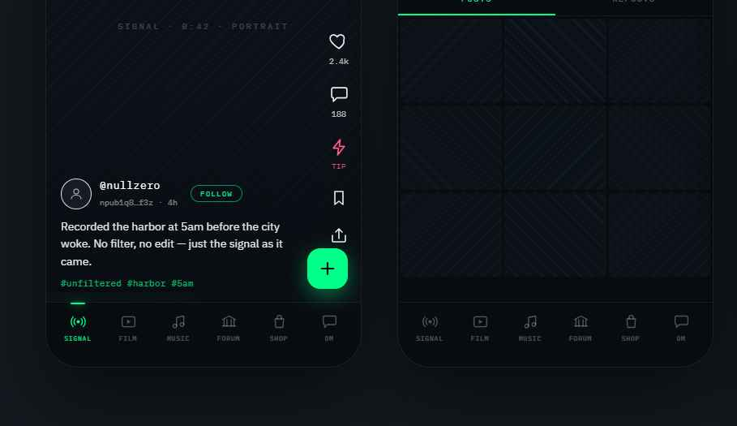

NDERja
Capability is the prerequisite of citizenship. You are not free if every essential tool of your life — identity, voice, money, knowledge — belongs to someone else.
Sovereign Ethical Realism
Nderja was born from one conviction: freedom is not declared, it is built. Whoever depends on infrastructure owned by others — infrastructure that can be switched off, censored, or monetized against them — is a tenant, not a citizen.
Our framework holds three ideas together. None of them works alone.
Realism
See the world as it is — its power relations, its interests, its machinery — without illusions and without cynicism. Illusion is the first form of dependence.
Whoever wishes to found a state and give it laws must presume that all men are bad, and that they will always act on the wickedness of their spirit whenever they have the occasion. Niccolò Machiavelli — Discourses, 1531
Ethics
Build on principles, not only for profit. Honor — nder — is the ancient Albanian answer to a modern question: what do you refuse to sell?
Every morning when you wake, remind yourself: today I shall meet men who are meddling, ungrateful, arrogant, disloyal, malicious and rude. All these vices come from ignorance of good and evil. But I have seen the beauty of good and the ugliness of evil, and I have recognized that the wrongdoer has a nature akin to my own. Marcus Aurelius — Meditations, c. 170 AD
Sovereignty
Own your tools, don't rent them. First acquire real capability — technical, economic, cultural — then exercise full citizenship. In that order.
A man who does not know the sword cannot be truly peaceful. Peace belongs to those who are capable of war yet choose not to wage it. Miyamoto Musashi — The Book of Five Rings, c. 1645
Others sell you a room inside their house. We build houses, hand over the keys, and pave the road out — and none of the three belongs to them.
From the digital to the physical
Nderja did not begin as a manifesto. It began as work — years of building, alone, with no one watching.
The Unfiltered Eye
It did not begin in Minneapolis — it began for Minneapolis. In the winter of 2026, in solidarity with the Americans fighting to keep their country a democracy, it took shape as an evidence-preservation protocol for the people documenting the truth on the street: strip the GPS and identity from a video, pass it hand to hand over a local mesh when the towers go down, and archive it where no one can pull it offline. No company, no funding, no permission asked — just code to keep a witness safe. We named it for Alex Pretti. Everything M4TR1X is today grew from that first seed.
Documentation as resistance
Beneath the code lay one conviction: that recording the truth, and keeping it beyond anyone's reach, is itself a political act — and that those who document from the front line deserve tools that protect them, wherever in the world they stand.
Sovereign infrastructure
In just six months the idea became architecture: decentralized networks, post-quantum cryptography, self-hosted identity. Not an app — an infrastructure that exists regardless of who runs it, because there is no center to seize.
From screens to streets
Philosophy that stays digital is a hobby. The movement stepped into the physical world — real machines, real places, real people — proving that sovereignty is built with hands, not only with keyboards.
Chat Control
Brussels calls it the CSA Regulation; everyone else calls it Chat Control. In the name of fighting illegal material, the European proposal would force every app to scan your private messages before they are even encrypted — mass surveillance made routine. It is the exact future nderja was built to make impossible: there is no central chokepoint to scan, and no backdoor to force into an app whose keys never leave the user.
The Albanian moment
And then history knocked. A generation of Albanians rose in the streets to demand what nderja has always claimed: a state that belongs to its people, not to its rulers.
Shqipëria e Re
For weeks, citizens have filled the squares of Albania demanding transparency, accountability and the end of a system where the future of the country is decided without its people. We stand with them — not above them, not behind them.
This is not our revolution to own. It belongs to those in the squares. What we offer is what we know how to build: tools that no power can switch off, words in three languages, and the patience of people who think in decades.
A new Albania — sovereign, honest, belonging to all — is not a slogan. It is the exact political form of what nderja has always meant: honor as public infrastructure.
A vow, not a strategy
We will not establish our operational home in Albania as long as the current system stands. We will not seek its permits, its favors, or its blessings.
Not out of distance — out of respect. Entering now would mean negotiating with the very machinery the people are contesting. We refuse to build the new inside the old.
The day the system falls — the day institutions answer to citizens instead of the reverse — we will come home, and bring everything we have built with us. This is our besa: a word given publicly, kept absolutely.
H8-Group
Philosophy without means is a wish. H8-Group is the independent economic engine that funds the movement — no party money, no foreign grants. Two fronts, one logic: the digital, where the tools get built (M4TR1X, Kalendae), and the physical, where they meet the street (Elea). Software you own and machines you can touch answer the same question — who holds the switch.
M4TR1X
Our first instrument: a decentralized social network with no central server, no accounts, no surveillance. Post-quantum cryptography, Tor routing, self-hosted identity. There is no building to raid, no switch to flip.
Inside it is everything a social network is supposed to be: a feed, stories, photos, video, music, forums, encrypted messages. Built on open protocols — Nostr, PeerTube, Mastodon, Funkwhale — so that no single company, including us, can own the conversation.
Identity is a cryptographic key pair signed with ML-DSA-65, the post-quantum standard (NIST FIPS-204): what you publish today cannot be forged tomorrow. On censored networks, traffic moves through Tor first. And all of it is open source, MIT licensed — verify us, don't take our word.
Desktop
The full experience for Windows, macOS and Linux: feed, stories, music, forums, encrypted messaging. One app, no account — your keys never leave your machine.
Mobile
Android APK and iOS app, installed directly — no App Store, no gatekeeper. Download, point it at a node you trust, done.
Node
The self-hosted heart: relay, media storage and video streaming in a single server. An ordinary home computer is enough to turn a citizen into infrastructure.
AI Detector
An open detector for AI-generated video, trained collectively through the network itself. A network built for truth must be able to recognize a fake.
Where we stand, honestly: developer preview. The first public node is online; the software is stable enough to self-host and build on, not yet meant for high-risk use. Saying what works and what doesn't — that too is honor.
The network is young. It grows one node at a time — and every node is a citizen's house, not a company's tower. If you can run a computer, you can hold a piece of the network.
How your device carries the content
There is no data center behind M4TR1X. When someone publishes a film, a song or a video, a powerful node transcodes it once into small streaming segments. From there, every device that is watching also passes those segments on to the next viewer, and your player reassembles them into the finished content. The heavy work happens once, on the few strong machines; the rest is carried by the crowd — which is why an ordinary home computer, even on a modest connection, is enough to take part.
Public by design — no private channels
Everything you publish on M4TR1X is public. There are no private groups and no closed channels — the walled, many-to-many rooms where illegal material usually circulates simply do not exist here. Direct messages are strictly one-to-one and end-to-end encrypted, never a broadcast channel; only your profile can be private. It is a structural answer: nothing to mass-scan, and nowhere to hide a distribution ring — without breaking the encryption of a private conversation between two people.
Get M4TR1X
No store, no account, no middleman. These buttons always point to the latest official build — download, install, connect to a node you trust.
Windows
.exe installerAndroid
.apkiOS
No App Store: download the IPA and sign it yourself with your own Apple ID, via AltStore or Sideloadly — the permission lives on your device, not in someone else's rented certificate. With a free Apple ID the signature renews every 7 days; AltStore automates it.
.ipa (unsigned)Underground by design
Film and Music aren't an afterthought — they're for the emerging artists who don't want, or don't fit, the mainstream: a place to share the work on their own terms. Especially now, when so many are weaving AI into their craft, the network doesn't gatekeep. The AI detector doesn't ban — it labels, honestly — so that those who work by hand and those who work with new tools both have room. M4TR1X is underground the way rap, punk and more than one film and music movement began: outside the gate, before the world caught up.


Kalendae
A personal agenda that lives entirely on your phone — calendar, tasks, notes, work hours, fitness and instalment payments in one local database. No account, no cloud, no tracking.
Elea Vending
The physical arm of H8-Group: independent vending machines that pay the bills and prove the philosophy on the street. No investors, no franchise — machines bought used, rebuilt by hand, and placed where people actually work.

Second life
We don't buy new machines — we resurrect old ones. Bodywork, wrap film, 3D-printed parts, a tablet as the new face: a unit headed for scrap returns as a modern machine at a fraction of the cost, dressed in the colors of the place that hosts it.
An honest cash box
An AI layer counts every coin, follows every product lot from loading to expiry date, and rearranges the shelves around real demand. Almost zero waste, almost zero counting errors — trust you can audit.
One Shot
Our own coffee: a dense, low-acid espresso blend — Brazil for body, India for crema, Ethiopia for aroma. Roasted in Italy today; Albanian roasteries as we grow. One shot: a single sip, taken seriously.
And every machine leads a double life. Above, it serves coffee and pays the bills that keep the movement independent; below, it can host a relay of the M4TR1X network. Sovereignty, one street corner at a time.
H8-Coin
H8 is the credit that circulates inside M4TR1X: it pays creators, rewards whoever keeps a node running, and never leaves the network. It is deliberately not a cryptocurrency.
What it costs
How a tip splits
Backed, not printed
Every H8 sold is covered by one euro held in reserve; the 25% on top is what pays for development and infrastructure. The reserve is not income and is not spent as such — it exists so the credit in circulation has something behind it. It is a backing commitment, not a peg and not a right of redemption: H8 stays inside M4TR1X.
What it is
A closed-loop utility credit — the same shape as arcade tokens or Twitch Bits. One H8 splits into 100 units, so the smallest tip is 0.01 H8. Every transaction is signed with post-quantum cryptography (ML-DSA-65) and chained with SHA3-256.
What it is not
Not a cryptocurrency, not an investment, not on any blockchain, not pegged to anything, not withdrawable to an exchange. There is no token sale and no promise of future value: H8 buys things inside M4TR1X, nothing else.
How it moves
Every tip splits automatically, hard-coded in the source: 50% to the creator, 30% to whoever runs the node that carried it, 20% to the platform — which pays for development, compliance and infrastructure. A boost goes entirely to the platform.
Not only digital
H8 is a token, but the loop it closes is the whole group — not a screen. It is built to be spent in the physical world too: at Elea machines, and in the M4TR1X shop for real objects that ship to your door. The same balance pays for a coffee and for a piece of hardware. The ledger and the internal payments already work; the physical leg arrives with the first machines on the street.
Why a closed credit
An old laptop worth €100 usually never gets sold: between the listing, the haggling and the shipping it isn't worth the trouble, so it stays in a drawer. The same laptop moves at once if what comes back is credit you actually want — tipping the film-makers and musicians you follow, or taking something else from the shop off someone who is clearing out their own shelves. Private people selling their own things, not businesses; the credit never leaves in cash. A pact that holds only inside the infrastructure.
Why you can check it
The ledger opens on a genesis block with zero pre-allocation, and anyone running a node can verify the whole chain themselves. The mint key is held by the founder, and we say so openly: an honest closed loop is worth more than decentralisation theatre while the network is being built.